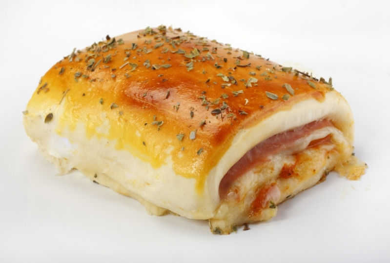

Casadinho
Gourmet
Coxinha

Joelho
Tropeiro Mineiro
Hambúrguer

Confit de Canard

Lasanha
Rondelli
Vamos juntos testar várias Receitas,
Bora?
Casadinho
Gourmet
Coxinha
Joelho
Tropeiro Mineiro
Hambúrguer
Confit de Canard
Lasanha
Rondelli
| Receita | Dificuldade | Tempo de preparo |
|---|---|---|
| Casadinho | Fácil | 1 Hora |
| Coxinha | Médio | 2 horas |
| Feijoada | Difícil | 4 horas |